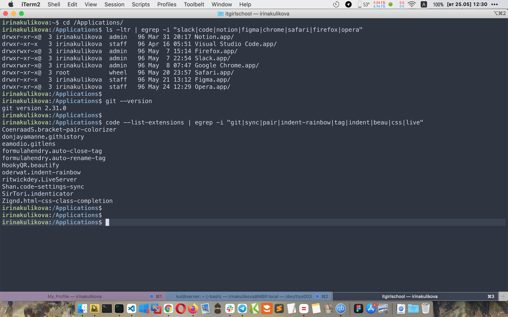

Homework. Week 1
Kotэ VS  Ирина
Ирина
Actors
Kotэ - повелитель знаний, главный чекер и просто КОТ
Ирина - студент, пытается дружить с "няшным" фронтендом
Act 1
Kotэ: Ну рассказывай, какие программки установила?
Ирина: Так эээ это ... все было почти установлено.
Kotэ: Пруфы где?! МЯУУУ...
(требовательно мяукает)
Ирина: Сейчас ...
(занервничала)
Task 1

Kotэ: Что-то не понятно совсем... Где фотки???
Ирина: Так это по привычке. Работаю в основном в
консоли, а делать 100400 скринов, ну такое себе). Поэтому вывела список установленных программ + список
плагинов в vscode. Конечно программи плагинов гораздо больше, но я их "загрепала"))
Kotэ: А где расширение, с иконками которое.
Кажется vscode-icons.
Ирина: Я другое использую - уже давно.
Хочешь, можешь посмотреть vscode-great-icons.
Kotэ: Муррр мяю прррощаю! (трется и ластится)
Act 2
Kotэ: А githab и trello?
Ирина: Скучный ты какой! Требовательный!
Act 3
Kotэ: Хммммм... А вот ты и попалась! А страничка где?
А html?
Ирина: Так ты на ней сидишь!!! 😄
Kotэ: Хитрая, шшш...
(шипит) А код?
Ирина: F12 😄🤣. Но для тебя
так и быть, покажу.
Act 4
Kotэ: А сколько времени у тебя ушло на написание
этого прекрасного кода?
Ирина: Ой, наверное ушли бы годы, прежде чем
появилась эта страничка, но я использовала свои любимые
hotkeys.
Task 4
cmd+C и cmd+V - классика!
Alt+Z (теперь мой любимый)
cmd+Z отменить, очень часто использую
Act 5
Kotэ: Последнее испытание и подарок ждет тебя! Муррр,
мяю
(мурчит, улыбаясь)
Ирина: Ой, а что за подарок?
Kotэ: Пять вопросов и подарок твой!
Task 5
- Kotэ: Что такое атрибут тега? Какие есть
атрибуты у тега img?
Ирина: Атрибут тега - это свойство тега,
которое позволяет форматировать текст, изменять картинку. У тэга img есть следующие атрибуты:
- src - ссылка на картинку
- alt - описание картинки
- Kotэ: Зачем нужен тег
span?
Ирина: Тег span нужен для выделения блока текста без
переноса строки. Необходим для форматирования одного или несколько слов.
- Kotэ: Как добавить иконку?
Ирина: Для добавления иконки используется тэг
link с атрибутами:
- rel - указываем короткое имя
- href - ссылка на иконку
- type - тип image/svg или png, в зависимости от типа иконки
- Kotэ: Как сделать маркированный список?
Ирина: Список помещаем в тег
ul, а каждый подпункт списка в теги li.
- Kotэ: А как выделить слово жирным
шрифтом?
Ирина: Можно внутри текста выделить тегом
b, а можно внутри стилевых тегов с использованием атрибута style и
свойства внутри font-weight:bold.
Final
Kotэ: Молодец!!! А вот и твой подарок!
Возьми меня!